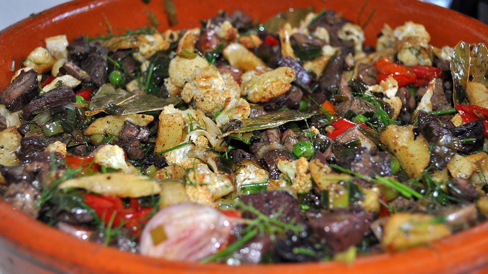
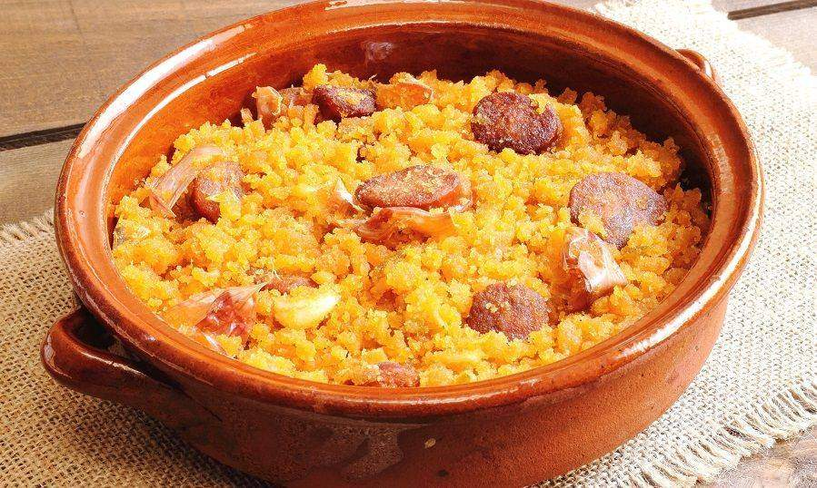

The Jerte Valley, in northern Extremadura is famous for the cherry blossom in Spring; an amazing spectacle when over two million trees bathe the valley sides in white. Following a century-long family custom, the cherries are grown in the traditional way on terraces carved out of the high mountainsides of the Jerte Valley, among crystal-clear springs and pure air. Only such a unique spot with a privileged microclimate could grow the best cherries in Spain.
The Jerte Valley is a visual and taste marvel. The gastronomy in Extremadura is one of the bests gastornomies in the world. Apart from having the best cherries in Spain and, for some people, the best cherries in the world; you have a lot of variety in dishes. You can choose from a garlic soup to high quality lamb, including a very rich and delicious dish called "Gazpacho Extremeño", created by shepard to survive winter cold in the high mountains.
 |
 |  |
| "Gazpacho Extremeño" | "Frité de cordero" | "Migas Extremeñas" |
As well as spring, Jerte invites you to experience the other seasons. For example in summer, the rivers and gorges offer you sport and adventure throughout the Sierra de Gredos. Options for the most active visitors include canyoning in the waterfalls at Las Nogaleas and Los Hoyos, while there are calmer attractions such as the natural pools you can find in each village.